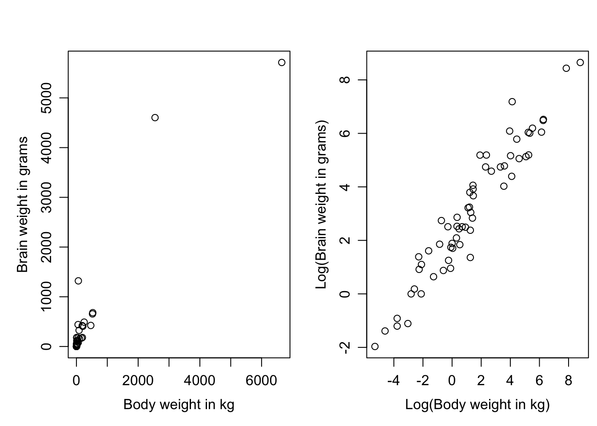

Use residuals to test simple linear regression assumptions
Recognise when transformations of the response and/or covariate may be needed and be familiar with common transformations
Derive the interpretation of regression coefficients after transformation
Learning activities
This week’s learning activities include:
Learning Activity
Learning objectives
Video 1
1
Readings
1, 2, 3
Collaborative exercise
1, 2
Collaborative exercise reminder
Important
In week 1 you were allocated into small groups to discuss the exercise at the end of this week. You should have already organised a time with your group to meet up by zoom and either discuss your solutions to this exercise, or help and guide each other to complete the task.
Assumptions of linear regression
In this section we introduce some simple methods for assessing the underlying assumptions of the simple regression model. For regression analysis we should always perform a reality check that the model we are fitting is at least approximately appropriate for the problem at hand. The assumptions of linear regression fitted by ordinary least squares are:
Linearity of the relationship
Homoscedasticity (constant variance)
Normality of the residuals
Independence of observations.
As shown below, assumptions (1) - (3) can be defined in terms of the random part of the regression model - the residuals. The residuals are the observed minus the predicted Y’s, i.e. \(e_i = Y_i-\hat{Y}_i=Y_i-(b_0+b_1x_i)\). Assumption (4) however is usually an assessment of the study design rather than assessed with a diagnostic analysis of the data.
Linearity
This assumption requires a linear (straight) relationship between the outcome and predictor. The plot below shows the effect of a non-linear relationship on the residuals.
In the first figure, the relationship is curved upwards and so when fitting a straight line through the data, the outcome value (\(Y\)) is frequently above the regression line for small and large values of \(x\), and below the regression line in the middle. Although this is reasonably obvious in the scatter plot above, it is helpful to plot the actual residual values instead of the outcome as per the plot below.
Note in this figure we plot the residuals against the predicted values of the regression line instead of the \(x\)-values themselves. When there is just one predictor variable, as the regression line is linear this is equivalent to plotting against \(x\). The advantage to plotting against the fitted value is that this extends naturally into multivariable models. From this residual vs. fitted plot, we can also see that the linearity assumption could be rewritten in terms of the residuals. E.g. the residuals have a mean of zero for all values of \(x\).
Homoscedasticity (constant variance)
This assumption requires that the variance around the regression line is constant for all values of \(x\). That is, the residuals have constant variance. The “residual vs fitted” plot we looked at above is also useful for assessing violations of the homoscedasticity assumption, as illustrated in the scatter and residual vs fitted plots below.
Here, we can see that as \(x\) increases, so does the variance of the residuals. This leads to a fanning out pattern in the residual vs fitted plot.
To contrast these plots, the below figures demonstrate what these plots look like when both the linearity and homoscedasticity assumptions are met.
Normalitiy
This assumption requires that the residuals be normally distributed. Note that this is an assumption about the distribution of the residuals, not about the distribution of \(Y\) or \(x\). We can plot the residuals on a histogram or normal quantile plot to assess the normality of residuals assumption – which has clearly been met in the figures below.
A well-known formal method for assessing non-normality is the Shapiro-Wilk test. It is based approximately on the correlation between the observed and expected residuals. The null hypothesis is that the residuals are normally distributed, so small p-values indicate evidence against a normal distribution. However, for small samples this test has low power for realistic non-normal alternatives, so it is difficult to use a non-statistically-significant result as evidence to support an assumption of normality in a small sample. Conversely, for large samples, small but unimportant deviations from normality may be declared statistically. Therefore we do not recommend this (or other) formal statistical tests of normality. Rather a visual assessment of a histogram or normal quantile plot is recommended.
Let’s check the assumptions of the regression the week 1 exercise where we use hers_subset.csv data to measure the association between diastolic blood pressure (DBP - the outcome) and body mass index (BMI - the exposure). The first plot shows the residual versus fitted plot. This shows an even scatter around zero with no fanning present for the majority of the plot. Towards the end of the plot, the residuals do seem to be a bit more negative than positive - but the sparsity of the data here makes this difficult to confirm. I would conclude here is no evidence against linearity or homoscedasticity and we can accept these assumptions as true. I would also like to see more data at higher fitted values levels to better confirm this. In the second plot, we see that the residuals are normally distributed as they follow a reasonably straight line on the normal quantile plot. Therefore we conclude the assumption of normality of residuals is true. Without further context of the study design that collected this data, we cannot draw any conclusions about the indepdence of observations - so we will assume this has been met. Therefore all the assumptions have been met and we conclude that a linear regression is appropriate for this data.
Stata code and output
Show the code
use hers_subsetreg DBP BMIrvfplot/* the residual versus fitted plot */predict res_std, residuals /* calculate the residuals*/qnorm res_std /* The normal quantile plot of the residuals*/## Source | SS df MS Number ofobs = 276## -------------+---------------------------------- F(1, 274) = 4.84## Model | 423.883938 1 423.883938 Prob > F = 0.0286## Residual | 23988.8842 274 87.5506722 R-squared = 0.0174## -------------+---------------------------------- Adj R-squared = 0.0138## Total | 24412.7681 275 88.7737022 Root MSE = 9.3569## ## ------------------------------------------------------------------------------## DBP | Coefficient Std. err. t P>|t| [95% conf. interval]## -------------+----------------------------------------------------------------## BMI | .2221827 .1009756 2.20 0.029 .0233961 .4209693## _cons | 67.82592 2.923282 23.20 0.000 62.07097 73.58087## ------------------------------------------------------------------------------
R code and output
Show the code
par(mfrow=c(1,2))hers_subset <-read.csv("https://www.dropbox.com/s/t0ml83xesaaazd0/hers_subset.csv?dl=1")lm.hers <-lm(DBP ~ BMI, data = hers_subset)plot(lm.hers,1) # The residual versus fitted plotplot(lm.hers,2) # The normal quantile plot
Note that in R, you can also generate these plots manually by calling the “residuals” or “fitted” property in the “lm.hers” object. e.g. plot(lm.hers$fitted, lm.hers$residuals). These properties can be helpful if you wish to use the residuals in other ways.
Transformations
Transformations are one of many possible remedies to deal with an assumption violation. They are particularly helpful when either the outcome, a covariate, or both are strongly right skewed - as is the case for many measurements in clinical and health research (e.g. length of hospital stay, survival times, and serum measurements). Although this skew isn’t of itself a problem (remember, the assumption is that the residuals are normally distributed, not the data itself), skewed data often results in violations to normality of residuals, homoscedasticity, and/or linearity. For example, consider the following plots.
We can immediately see a number of problems that would deter us from fitting a linear regression of \(Y\) on \(x\). First, there is no clear linear relationship between \(Y\) and \(x\). Secondly, the variability of the \(Y\)-values increases with \(x\). Thirdly, the residuals of a linear regression are clearly non-normal, and heavily right-skewed. Indeed a histogram of \(Y\) shows that the outcome is heavily right skewed.
Log transformations of the outcome
The scatter plot above is an example where the skew in the outcome (\(Y\)) variable has caused problems in the linear regression. A common transformation to reduce skew is the Log transformation. Indeed log-transforming \(Y\) eliminates this skew, and produces a scatter plot where linear regression would be appropriate, but this time with \(\text{log}(Y)\) as the outcome variable.
The log transformation is a very natural tool for many biological measures because it converts multiplicative relationships (which characterise processes such as cell division and successive dilution of assays, for instance) into additive relationships - which by the central limit theorem are more likely to be normally distributed. For example on a logarithmic scale the values 0.1, 1 and 10 equals \(log(0.1) = -2.30\), \(log(1) = 0\) and log(10) = 2.30 which are all equally spaced (with a difference of 2.3) as the original numbers (0.1, 1 and 10) all differ by a multiplicative factor of 10. Note that in this course “Log” is used to designate the natural logarithm. But logarithms to any base will work equally well as this corresponds simple to rescalling the logged values.
In the example above the variable \(Y\) is said to have a log-normal distribution as it is normally distributed after taking a log transformation. i.e. \(\text{log}(Y) \sim N(\mu,\sigma^2)\). For log-normally distributed variables, the geometric mean as defined by \(GM(Y) = e^{\text{E}[log(Y)]} = e^{\mu}\) is a more suitable summary statistic than the (arithmetic) mean we normally refer to. The geometric mean is also helpful for interpreting a linear regression when the outcome has been log-transformed as we see below.
The regression model is \(\log Y_i=\beta_0+\beta_1 x_i+\varepsilon_i\), where \(\varepsilon_i \sim N(0,\sigma^2)\) and therefore \(\text{E}[\log Y_i]=\beta_0+\beta_i x_i\). Exponentiating both sides of the above, and recalling that GM\((Y)=e^{\text{E}[\log Y]}\), we can obtain an interpretation of the parameter \(\beta_1\) in terms of the geometric mean of \(Y\).
Introducing the notation GM\((Y|x)\) to denote the geometric mean of \(Y\) at a given value of the covariate \(x\), we now examine the effect on GM\((Y|x)\) for a change of 1 unit in \(x\): \[\frac{\mbox{GM}(Y \mid x+1)}{\mbox{GM}(Y \mid x)}
=\frac{e^{\text{E}[\log Y \mid x+1]}} {e^{\text{E}[\log Y \mid x]}}
=\frac{e^{\beta_0+\beta_1(x+1)}} {e^{\beta_0+\beta_1x}}
=\frac{e^{\beta_0} e^{\beta_1x} e^{\beta_1}} {e^{\beta_0} e^{\beta_1x}}
=e^{\beta_1}.\] Therefore increasing \(x\) by 1 is associated with a proportionate (multiplicative) increase of \(e^{\beta_1}\) in the geometric mean of \(Y\).
Log transformations of the outcome and covariates
Consider the following scatterplot of brain weight (in grams) versus body weight (in kg) for 62 different mammal species (Allison and Cicchetti, Science, 1976).

As almost all the data are bunched up in the bottom left hand corner. However, a logarithmic transformation of both brain and body weight reins in the extreme values on both axes and produce a scatterplot worth pursuing with linear regression.
The regression model that would be fitted is \(\log Y_i=\beta_0+\beta_1\log x_i+\varepsilon_i\). The parameter \(\beta_1\) reflects the effect on \(\text{E}[\log Y\)] of additive changes in \(\log(x)\), which correspond to multiplicative changes in \(x\). Therefore let us examine the proportionate change in GM(\(Y\)) for a doubling of covariate \(x\).
\[\frac{\mbox{GM}(Y \mid 2x)}{\mbox{GM}(Y \mid x)}
=\frac{e^{\text{E}[\log Y \mid 2x]}}{e^{\text{E}[\log Y \mid x]}}
=\frac{e^{\beta_0+\beta_1\log(2x)}}{e^{\beta_0+\beta_1\log(x)}}
= \frac{e^{\beta_0}(2x)^{\beta_1}}{e^{\beta_0}x^{\beta_1}}=2^{\beta_1}.\]
The estimated slope for this regression is 0.752, and so \(2^{0.752}\) = 1.68. Therefore, we estimate the geometric mean brain weight to increase 1.68-fold or by 68% for each doubling in weight of mammals. The 95% confidence interval for \(2^{\beta_1}\) is obtained from the 95% confidence interval for \(\beta_1\) (say (L,U) ) by raising 2 to the power of the endpoints, namely (\(2^{L}, 2^{U}\)), producing (1.62, 1.75) for this example.
This example is a rather extreme case with respect to the distribution of the covariate and it is probably fair to say that transformations of \(x\) are not usually as important to consider as transformations of the outcome. Since the linear model takes the values of \(x\) as given, so there is no modelling of their distribution, there is no formal need to obtain a “nice” symmetric distribution of the independent variable. However, when we discuss the concept of leverage in week 3 we will see that highly skewed \(x\) distributions are undesirable because they may lead to just one or two observations having an unduly large influence on the estimated regression model.
Other methods for handling non-constant variance
Weighted least squares
Weighted least squares is an alternative linear regression fitting algorithm to ordinary least squares which is suitable when the variance is non-constant. Here, instead of minimising the sum of square error \[ \sum(Y_i - \bar{Y}_i)^2\] we instead minimise the weighted sum of square error \[ \sum w_i(Y_i - \bar{Y}_i)^2\] where \(w_i = \frac{1}{\text{var}(Y_i)}\). That is, the error for each observation is scaled by it’s predicted variance. When the predicted variance is unknown iterative procedures exist to progressively improve homoscedasticity in weighted linear regression.
Collaborative exercise
assumptions.csv consists of simulated data for you to practice checking the assumptions of simple linear regression. It contains 4 continuous outcome variables y1, y2, y3 and y4. It has two explanatory variables x1 and x2. Your task is to investigate the assumptions of any or all of the possible different simple linear regressions between the outcome variables and the explanatory variables. There are 8 possible regressions to check in total (4 choices for outcome variable, and 2 choices for explanatory variable. \(4\times2=8\)). You can either investigate all 8, or however many you have time for - but the more practice the better!
Discuss your analysis of the assumptions with your group in a self organised zoom meeting, or on your groups dedicated discussion board. If you need help with setting up a zoom meeting, please contact the unit coordinator for assistance.
Summary
This week’s key concepts are:
Linear regression has four key assumptions that should be investigated:
Linearity - investigated with a residual versus fitted plot. An even scatter around zero indicates this assumption has been met
Homoscedasticity (constant variance) - investigated with a residual versus fitted plot. An even scatter around zero with no “fanning” indicates this assumption has been met
Normality of residuals - investigated with a normal quantile plot, or a histogram, of the residuals. For large sample sizes, moderate deviations to this assumption are ok.
Independence of observations. This is usually investigated by reviewing the study design. However sometimes there can be warning flags present in the data (e.g. a participant identifier column with duplicate entries).
Violations of any of the assumptions above will result in regression results that are biased, have incorrect interpretations, or have inflated type 1 errors. The greater the violation to the assumption, the greater the consequence
Log transformations are a useful tool that can often improve assumption violations. However, the interpretation of regression coefficients will change with a log transformation.